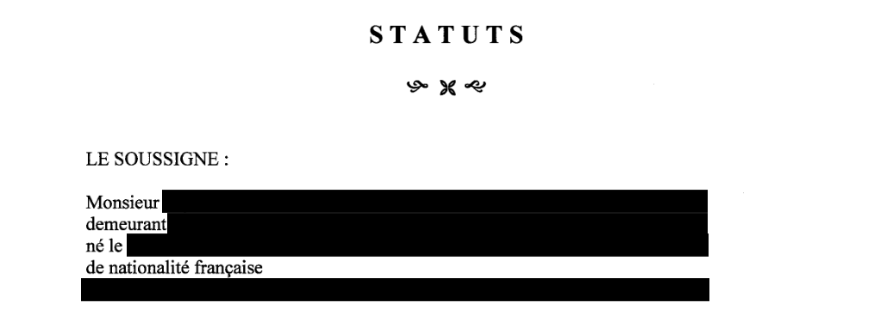
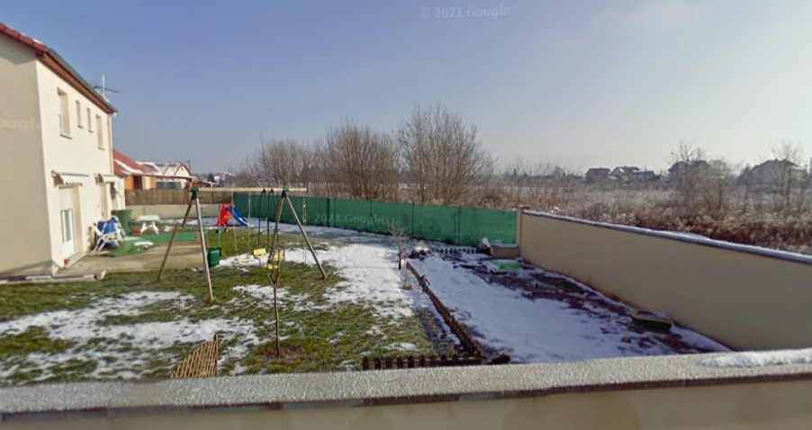
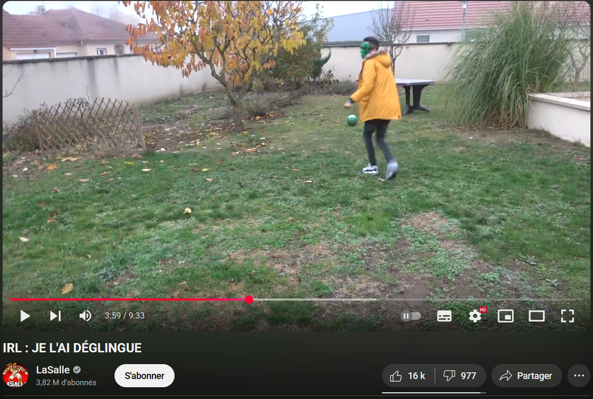
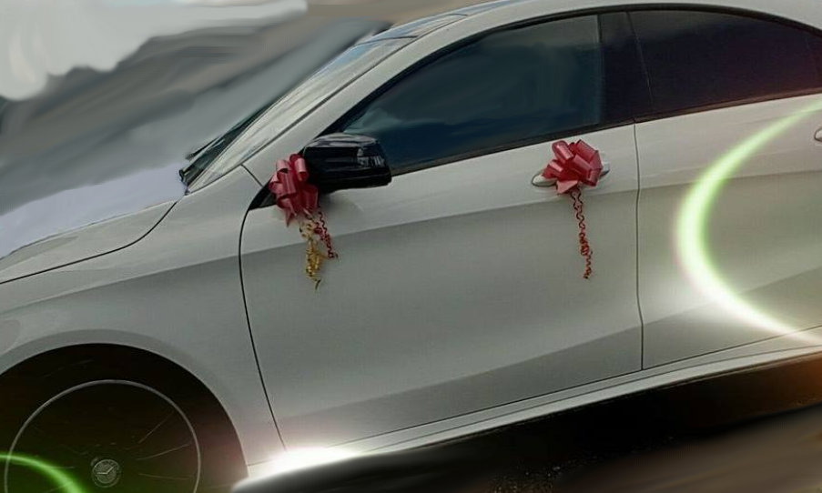

Je sais qui vous êtes
Lasalle.
Pour des millions d'abonnés, ce nom est synonyme de GTA, de fun et de mystère. Depuis plus de dix ans sur YouTube, il a construit un empire autour de son pseudonyme… sans jamais rien dévoiler de sa vie privée. Pas de prénom, pas de visage, aucune information personnelle. Un fantôme numérique, en apparence intouchable.
Mais à l’ère d’Internet, est-il vraiment possible de rester anonyme
?
Est-il possible de ne pas laisser de traces ? De ne pas être identifié
? De rester dans l’ombre ?
Et si... Quelqu’un de très déterminé voulait enquêter sur lui ?
Et si... Armé de patience et de quelques outils, on essayait de
rassembler des miettes d'informations laissées en ligne depuis plus de
dix ans ?
Face à une personne aussi verrouillée que Lasalle, j'ai entrepris une véritable enquête, uniquement basée sur l'OSINT.
OSINT
L’OSINT, pour Open Source Intelligence, désigne la collecte et l’analyse d’informations accessibles publiquement. Pas de piratage, pas d’accès illégal : uniquement ce que tout le monde peut trouver sur Internet.
Il peut s’agir d’un post sur un réseau social, d’une vieille photo conservée par un moteur de recherche, ou encore d’un détail visible en arrière-plan d’une vidéo.
Pris séparément, ces éléments paraissent insignifiants. Mais une fois recoupés, ils peuvent révéler bien plus que ce que l’on imagine.
Les premières pistes
À première vue, on ne sait rien de Lasalle.
Aucune info personnelle directement accessible, aucune trace évidente.
Il existe bien une page sur un fandom Youtube qui avance un nom et une date de naissance. Mais rien ne permet de confirmer l’origine de ces informations. Elles ne sont sourcées nulle part.
Est-ce que c’est vrai ? Peut-être.
Mais en l’état, ça reste une
hypothèse, pas une donnée exploitable. On peut la garder sous le
coude, mais elle ne vaut rien tant qu’on n’a pas de recoupement
solide.
Dans l’une de ses vidéos, Lasalle partage ce qui semble être des photos de lui adolescent, pour mettre fin aux multiples fake face reveals qui circulent.
Mais là encore, on ne peut pas vraiment savoir...
Ces photos sont peut-être vraies. Peut-être pas. Il pourrait très bien avoir choisi des images volontairement floues ou déformées pour entretenir la confusion. C’est d’ailleurs tout à fait cohérent avec son profil : quelqu’un de très conscient de sa visibilité, qui maîtrise parfaitement son image, et qui n’a clairement aucune envie de voir sa vie privée exposée.
Ce point est essentiel : Lasalle sait ce qu’il fait.
Quand on regarde ses vidéos, on comprend vite que ce n’est pas quelqu’un d’inconscient ou négligent. Il est réfléchi, malin, et visiblement mature. Il s’exprime bien, choisit ses mots, et ne laisse que ce qu’il veut bien montrer.
Il ne faut donc jamais écarter la possibilité qu’il brouille volontairement les pistes.
Côté comptes officiels, il utilise YouTube, un compte Twitter, et un compte Facebook. Pas de grosse activité, mais les comptes sont là, et mis à jour de temps en temps. Rien d'extravagant ou d'inhabituel dans leur usage, mais ça pose les premiers repères pour le reste de l’analyse.
Trouver la faille
Lasalle fait partie de ces rares créateurs obsédés par la confidentialité. Tout est verrouillé, tout est contrôlé. On devine chez lui une vraie conscience des risques liés à l’exposition, et une volonté obsessive de séparer son pseudonyme de sa vie réelle.
Mais personne n’est infaillible.
Peu importe les précautions prises, il suffit d’un détail laissé au mauvais endroit, d’un indice que l’on pense insignifiant, pour ouvrir une brèche.
Pour trouver une faille, il faut généralement prendre du recul. Ne pas foncer tête baissée dans la cible directe, mais observer autour, et surtout remettre les éléments dans leur contexte. Quand une personne est ultra prudente, comme Lasalle, la meilleure chose à faire est souvent de remonter d’un cran. Qui l’entoure ? Qui l’a connu avant sa notoriété ? Avec qui partage-t-il son temps à l’écran ?
C’est là qu’un collectif revient systématiquement :
→
Lasalle
(3,82 M)
→
Unwin
(1,47 M)
→
Aidenshow
(1,53 M)
Un trio bien connu de la communauté. Unwin et Aiden apparaissent régulièrement à ses côtés depuis des années. Dans leurs vidéos, surtout celles publiées avant 2019 (avant de se séparer et de se retrouver en 2023), on retrouve un noyau solide, avec une vraie complicité
Ils ont souvent réalisé des vidéos à thèmes, nous permettant d'en apprendre un peu plus sur eux :
En les regardant avec un œil extérieur, on peut déjà dégager quelques dynamiques.
Lasalle apparaît comme le plus posé des trois. Il semble cadrer les vidéos, fixer les règles, garder le ton. Aiden et Unwin, plus jeunes, apportent de l’énergie, de l’humour, parfois une forme d’improvisation. Leur complémentarité est visible, et on sent que le groupe se connaît bien.
Unwin, notamment, est présenté comme le voisin de Lasalle. C’est répété dans plusieurs vidéos. Il le connaît depuis l’enfance. Leurs parents se connaissent aussi. L’information passe presque inaperçue, mais elle est intéressante.
Aiden, lui, semble avoir rejoint le groupe plus tard, lors d'un défi de Lasalle sur le jeu GTA Online.
Ce genre de détail ne donne pas directement une information sensible.
Mais ça ouvre des possibilités. Parce que parfois,
la faille ne vient pas de la cible principale, mais de quelqu’un
qui gravite autour, avec un niveau de vigilance un peu moins
élevé.
Quelqu’un qui, à un moment dans son chemin, s'est débarrassé de son anonymat...
Une image vaut mille mots
Ce qu’il faut bien comprendre, c’est qu’un visage n’est pas juste un détail visuel. C’est une clé d’identification. Une fois que l’on connaît le visage de quelqu’un, il devient beaucoup plus simple de le recroiser dans d’autres contextes : photos de groupe, événements publics, anciens contenus, fréquentations, archives, ...
Malgré leur anonymat, des images du visage d'Unwin et d'Aiden circulaient déjà depuis longtemps, ce n'était pas réellement un secret.
Il suffit de remonter à la Paris Games Week 2015, où certains d’entre eux apparaissent à visage découvert. Pas de masque, pas de tentative de camouflage, ils étaient là, accessibles, reconnaissables. Et c’est sans parler de certains montages un peu approximatifs, publiés à l’époque sur d’autres chaînes YouTube, qui laissent apparaître leur visage de manière plus ou moins volontaire. Unwin en a déjà fait une vidéo :
Et une fois qu’on officialise un visage, on officialise aussi une proximité. Deux personnes apparaissent ensemble, à plusieurs reprises, dans des vidéos… On peut statistiquement supposer qu’elles se connaissent dans la vraie vie. Et cette proximité devient une information capitale dans une démarche OSINT.
Des objets, des lieux, des liens
Les visages ne sont pas les seuls éléments révélateurs. Il y a aussi ce que les gens montrent volontairement, sans forcément se rendre compte de ce que ça implique.
Dans plusieurs vidéos, Lasalle montre par exemple sa voiture : une Mercedes CLA Phase 1. Très belle voiture. Très reconnaissable. Et, forcément, très identifiable. Ce n’est pas anodin. C’est un élément de distinction fort, difficile à anonymiser.
Dans cette dernière vidéo, un autre visage apparaît : Batflunch, YouTuber lui aussi. Et en creusant un peu, on comprend qu’il est le neveu de Lasalle.
Encore une fois, l'information semble insignifiante. Mais c’est justement ce type de détail, une relation familiale exposée, même brièvement, qui élargit considérablement le champ d’analyse.
À partir de là, il ne s’agit plus uniquement d’un créateur isolé, mais d’un réseau de relations identifiables. Et plus le réseau est large, plus il est probable que quelqu’un, quelque part, ait laissé une information utile.
Agrandir le groupe
Dans le Youtube Game, nombreux sont ceux qui se sont servis du mystère qui planait autour de l’identité de Lasalle. Mais ce qu’on finit par comprendre, en analysant le contenu publié au fil du temps, c’est que beaucoup de ces personnes étaient en réalité très proches de lui.
Il y a quelques années, Lasalle a lancé un concept IRL intitulé «
Le dernier qui… ».
Une série de défis filmés, rassemblant plusieurs créateurs, amis ou
proches, avec une récompense à la clé. Ces vidéos, au-delà de leur
aspect divertissant, posent quelque chose de plus large : elles
révèlent un réseau.
Parmi ce réseau, on peut par exemple, identifier de nombreuses têtes :
→
Unwin
(1,47 M) (Le voisin de Lasalle)
→
BatFlunch
(1,25 M) (Le neveu de Lasalle)
→
Alien
(466 k) (Qui se trouve être le frère d'Unwin)
→
DBC
(138 k) (Présenté comme le frère officiel de Lasalle)
→
Boubou
(397 k)
→
MoKeY
(810 k)
→
Brave Type
(2,12 k)
→ Et d'autres personnalités d'Instagram et autres...
Toutes ces personnes apparaissent à visage découvert. On comprend qu’elles se connaissent bien. Elles participent ensemble à des tournages IRL, elles interagissent naturellement. Et surtout : elles connaissent toutes Lasalle en dehors du cadre YouTube.
À ce stade, ce n’est plus de l’observation, c’est une confirmation : Lasalle est entouré de personnes identifiables, avec des visages connus, parfois même des identités publiques. Et plus on avance, plus on commence à faire le lien entre ces individus.
Une zone
En creusant un peu, on s’aperçoit aussi que beaucoup d’entre eux vivent au même endroit. La ville de Nancy revient à plusieurs reprises dans les vidéos. Et avec quelques recoupements très simples (rien d’intrusif), on parvient à identifier la commune exacte dans laquelle plusieurs membres de ce groupe se sont rencontrés, et probablement où ils vivent encore...
À la base, il n’y avait rien.
Un pseudonyme. Un mystère. Aucune donnée exploitable.
Et pourtant, au travers de quelques recherches, on a une dizaine de personnes identifiables, une zone géographique, des liens de parenté, des collaborations publiques, et une reconstitution partielle de leur vie commune.
Lasalle, lui, continue de garder sa ligne : très peu d’infos personnelles, peu d’exposition directe, pas d’erreur visible (ou presque).
Mais son entourage, lui, n’est pas aussi discipliné. Et c’est exactement là où commence l’effet OSINT. Il suffit souvent de morceaux, des visages, des lieux, des connexions. Ce sont ces détails en apparence anodins qui, une fois mis bout à bout, finissent par construire une image complète.
Les traces administratives
Avant d'aller plus loin, il faut comprendre une chose : à ce stade, on a réuni suffisamment d’éléments pour cartographier partiellement une identité.
Un entourage identifiable, des visages connus, des connexions vérifiées, et une loyauté collective étonnamment solide. Dans un monde où la notoriété attise souvent la jalousie ou la trahison, ce groupe fait figure d’exception. Personne ne fuit l’anonymat de Lasalle, personne ne lâche l’information. Et pourtant, petit à petit, une structure se dessine.
Dans une démarche OSINT, ce sont justement ces structures qui
comptent.
Pas les révélations spectaculaires, mais les détails
persistants, ceux qu'on ne peut pas totalement cacher, parce qu’ils
sont nécessaires pour faire tourner une activité publique.
Et c’est là qu’on touche à l’administratif.
Créer du contenu sur YouTube, ce n’est pas seulement publier des
vidéos. C’est générer des revenus, travailler avec des marques,
déclarer ses gains, être imposé.
Et pour ça, il faut un statut légal.
En France (comme dans la plupart des pays), un créateur de contenu qui dépasse un certain seuil de revenus doit créer une entreprise. Ça peut être une micro-entreprise, une société (type SASU ou SARL), ou une structure un peu plus complexe. Mais dans tous les cas, il y a une base légale.
Et cette base, elle laisse des traces.
Certaines de ces informations sont publiques, parce que ce sont des obligations légales.
Une entreprise, par exemple, est enregistrée avec un numéro SIREN, un objet social, une adresse de domiciliation, une date de création. On peut aussi y voir des dirigeants, des statuts, parfois même des bilans si l’activité est importante.
Ce ne sont pas des données cachées. Ce sont des données ouvertes, accessibles à tous, publiées par l’administration elle-même (via le Registre national du commerce et des sociétés, l’INPI, ou d’autres plateformes d’information légale).
Il suffit de savoir quoi chercher, où chercher, et comment recouper avec d'autres éléments.
Dans le cas de Lasalle, qui semble très structuré et actif depuis
longtemps, il est probable qu’une structure juridique soit en place
pour encadrer son activité.
Et c’est un point important : une présence médiatique forte laisse
inévitablement des empreintes dans les systèmes officiels.
Les limites
Il était évident que Lasalle ne tomberait pas dans une erreur basique,
comme donner à son entreprise le nom exact de sa chaîne YouTube. Il
est bien trop prudent pour ça.
Mais même en l’absence de lien direct, les structures administratives
laissent des indices. Et avec suffisamment de patience, de
vérifications croisées, et une bonne méthode de recherche, on finit
par faire le lien.
C’est là qu’on accède à des documents officiels. Des informations
certifiées.
Nom, prénom, date de naissance, adresses.
Pas seulement pour Lasalle, mais aussi pour Unwin.

Ces données ne viennent pas d’un leak.
Elles proviennent d’un système administratif légal et public, conçu pour encadrer l’activité économique, mais qui indirectement expose une partie de l’identité des personnes concernées.
Et à partir de là, tout s’aligne.
On ne travaille plus sur des hypothèses, des fragments flous ou des suppositions issues d’une vidéo. On a une fiche complète, validée, administrative, qui permet de relier un pseudonyme à une identité, une identité à un endroit, un endroit à un historique, et un endroit à un visage.
Des confirmations
Récupérer des données, c’est une chose.
Mais pour qu’elles aient du sens, il faut pouvoir les confirmer. Sans
preuve, ce ne sont que des hypothèses. Des suppositions sans
fondement. Et dans une démarche OSINT, la validation des informations
est une étape incontournable.
Prenons un exemple simple.
Vous avez peut-être déjà entendu parler du jeu
GeoGuessr.
Le principe est de retrouver un lieu dans le monde à partir d’une
simple photo de rue. Ça peut paraître ludique, mais dans l’OSINT,
c’est une vraie compétence.
Monuments, gares, stations-service, façades d’immeubles, végétation, type de sol, panneaux de signalisation… tout est indice.
Et tous les morceaux de vie que nous postons en ligne (stories, post insta, selfie, vlog) sont autant de fragments géolocalisables. Chaque photo est, quelque part, une balise GPS indirecte.
Aujourd’hui, il existe des outils gratuits, accessibles à n’importe qui, qui permettent d’analyser une photo ou une courte vidéo (retrouver l'endroit exact, identifier la saison, estimer l'heure approximative (grâce à la position du soleil), ...)
Tout cela sans aucun accès privé, simplement avec les bons outils et un peu de méthode.
Et dans le cas de Lasalle, ce principe a permis d’aller plus loin. Avec un peu de recoupements, on peut retrouver une maison. Ou plus exactement, une maison dans laquelle il a déjà tourné avec Unwin.
Mais on parle d’un lieu vérifiable, avec des éléments d’architecture, de mobilier, ou d’environnement clairement identifiables dans une vidéo. Et à partir du moment où un lieu devient reconnaissable… il permet de valider nos hypothèses.


Note : Afin d'éviter de donner trop d'informations (et de tomber dans le doxxing), j'ai volontairement réduit la taille des images. De plus, il est fort probable qu'il ait déménagé depuis le temps, au vu des dernières informations. :-)
Des informations, encore des informations, toujours plus d'informations
Dans une démarche OSINT, toutes les données publiques sont exploitables. Ça comprend les documents administratifs (liés à une entreprise, une association, un dépôt de marque…), les photos, les vidéos, les commentaires… mais aussi, surtout, les réseaux sociaux (surtout quand ils sont publics).
Dès qu’on obtient un nom, un prénom, une commune, avec un peu de Google Dork, on peut dénicher des informations précieuses. C’est une étape simple, mais redoutablement efficace.
Encore une fois, dans ce cas précis, Lasalle reste cohérent avec lui-même, vous vous en doutez, pas de compte personnel public à son nom, aucune exposition directe sous identité réelle, pas de lien explicite entre son image publique et une présence privée en ligne.
Et franchement, ce n’est pas surprenant. Il a compris les risques, il a structuré son anonymat, et on sent qu’il garde le contrôle.
Mais ce n’est pas forcément le cas de tout le monde autour de lui.
Parce que oui, même s'il est extrêmement prudent, ses proches le sont-ils ?
C’est une règle non écrite, mais fondamentale : l'erreur ne vient pas toujours de celui qui est ciblé. Elle peut venir de quelqu’un d’autre. Quelqu’un qui n’a pas conscience des implications. Quelqu’un qui pense partager “un souvenir sympa”, mais qui en réalité, lâche l’information.
Et dans l’univers de Lasalle, ce type de situation est loin d’être
impossible.
Son entourage est nombreux, visible, et actif. Tout le monde ne
partage pas le même niveau de conscience numérique. Et parfois, quand
on enquête, on a même l’impression que Lasalle lui-même laisse des
indices ici et là, comme des éléphants au milieu du salon.
Le danger des réseaux sociaux
Les réseaux sociaux partaient probablement d’une bonne intention. Un outil pour relier les gens, raccourcir les distances, faire perdurer les liens. Plus rapide qu’une lettre, plus direct qu’un appel, plus vivant qu’un simple SMS.
Mais ils ont évolué.
Aujourd’hui, ils sont devenus une extension de nous-mêmes. On y expose nos souvenirs, nos pensées, nos photos, nos lieux, nos humeurs. On les alimente, on les entretient. Parfois machinalement. Et au fil du temps, ces espaces deviennent des journaux intimes publics, un miroir déformé, mais révélateur.
Ils contiennent nos détails les plus personnels, parfois plus que ce
que nous-mêmes imaginons.
Et c’est là que réside le problème.
Parce que dans le cadre d’une enquête OSINT (ou d’espionnage, voire de harcèlement…), les réseaux sociaux sont une mine d’or.
Un simple compte, même fermé, peut donner des indices :
- L'URL du compte (facebook.com/le-bg-de-l-url-style/ ;-) )
- Les publications
- Les likes
- Les photos
- Les commentaires
- Les biographies
- Les événements
- Les redirections vers d'autres réseaux sociaux...
Et c’est en remontant ces traces qu’on commence à faire des liens.
On retrouve des personnes que l'on connaissait déjà... Des amis
en commun, des membres de la famille, des personnes du même cercle,
des lieux récurrents, ...
Petit à petit, les théories deviennent des évidences, les doutes deviennent des certitudes. Les réseaux sociaux deviennent une structure cartographique, un système relationnel d’où on peut dériver des noms, des visages, des origines, et parfois même une adresse.
Et le plus ironique, c’est que ce ne sont pas forcément les cibles qui exposent ces données. Non. C’est l’entourage.
On peut faire extrêmement attention à ce que l’on publie. Mais il suffit d’un proche qui poste une photo, une vidéo, ou même un simple commentaire… Et l’anonymat s’effondre.

Pourquoi cette enquête ?
À la base, enquêter sur Lasalle, c’était un défi.
Un jeu de piste intellectuel. Un exercice.
Je pratique régulièrement l’OSINT, autant par intérêt personnel que pour garder la main sur les outils, les approches, les nouveautés. C’est un domaine en perpétuelle évolution, et c’est en pratiquant qu’on reste affûté.
Et puis un jour, je tombe sur une vidéo de
Théo Malini.
Il avait mené une enquête similaire. Je me suis dit : pourquoi pas moi
?
J’ai commencé simplement. Quelques recherches de base, rien de plus.
Mais rapidement, chaque information menait à une autre.
Chaque petite pièce ajoutée au puzzle rendait l’image plus nette.
Et plus j’avançais, plus je réalisais à quel point il est difficile,
voire impossible, de rester totalement anonyme en ligne.
Créer une activité ? Ouvrir une société ? Partager une vidéo banale ? Tout cela laisse des traces. Des fragments de vie, indexés, référencés, parfois même automatiquement recoupés.
Ce jeu m’a plu.
J’ai compilé, recoupé, cartographié sans jamais me prendre pour ce que
je ne suis pas. Et un jour, en initiant un collègue du milieu cyber à
l’enquête, on s’y est mis à deux. Et comme prévu : à deux, on a trouvé
encore plus.
C’est lui qui m’a poussé à écrire.
J’ai hésité longtemps. Très longtemps.
Je n’ai aucune envie de porter atteinte à la vie
privée de Lasalle, ni d'encourager qui que ce soit à l’identifier.
L'objectif de cet article n’est pas de doxxer. (Je le rappelle
d’ailleurs : le doxxing est illégal, puni par
la loi.
Ce que je veux, c’est sensibiliser.
Trop de gens ne prennent pas ces sujets au sérieux. Mais l’exposition numérique, même partielle, peut avoir des conséquences importantes. Parfois, on pense contrôler ce qu’on montre… jusqu’à ce que les pièces s’assemblent, sans qu’on ait rien vu venir.
Cette enquête était un exercice.
L’article est une synthèse
maîtrisée, filtrée, encadrée. Je n’y dévoile rien qui
puisse nuire à qui que ce soit.
Mais à tous ceux qui liront ces lignes, je n’ai qu’un mot :
L’anonymat est un leurre. Je sais qui vous êtes.
Un grand merci à Anas El Faijah aka Luffy, pour m’avoir poussé à
écrire cet article.
Je te le dédie. :-)